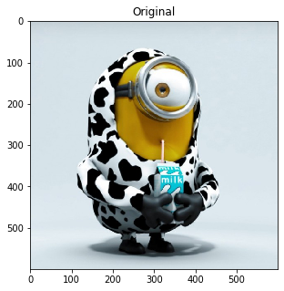
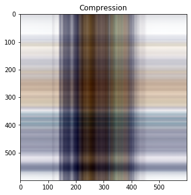
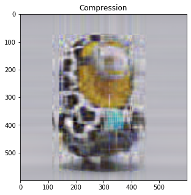
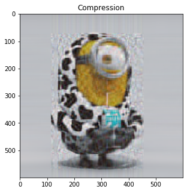
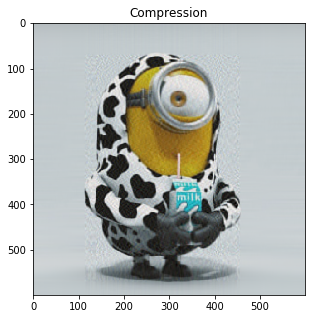
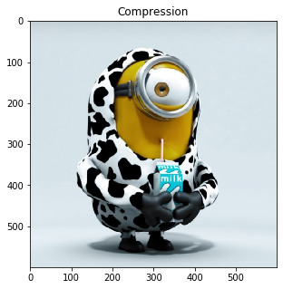

Image Compression Using SVD
1 | import numpy as np |
1 | def svdCompression(image, k): |
原图 k=600
1 | file = "wechat.jpg" |

令K=1（取前1个奇异值）
1 | svdCompression(image, 1) |
sigma size: 600
sigma size: 600
sigma size: 600

令K=10（取前10个奇异值）
1 | svdCompression(image, 10) |
sigma size: 600
sigma size: 600
sigma size: 600

1 | svdCompression(image, 20) |
sigma size: 600
sigma size: 600
sigma size: 600

令K=50（取前50个奇异值）
1 | svdCompression(image, 50) |
sigma size: 600
sigma size: 600
sigma size: 600

1 | svdCompression(image, 100) |
sigma size: 600
sigma size: 600
sigma size: 600
令K=500（取前500个奇异值）
1 | svdCompression(image, 500) |
sigma size: 600
sigma size: 600
sigma size: 600

本博客所有文章除特别声明外，均采用 CC BY-NC-SA 4.0 许可协议。转载请注明来自 ZHAO.Z！
打赏
 wechat
wechat alipay
alipay
相关推荐